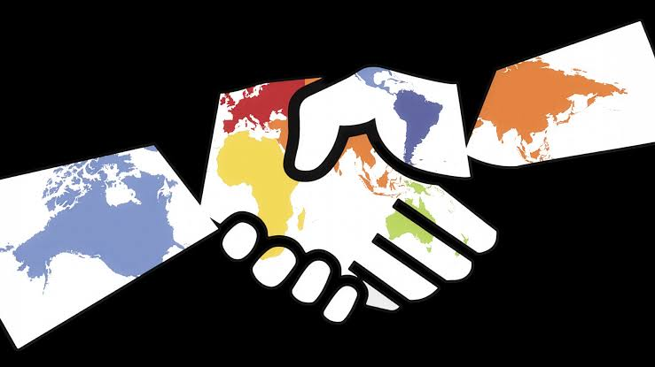
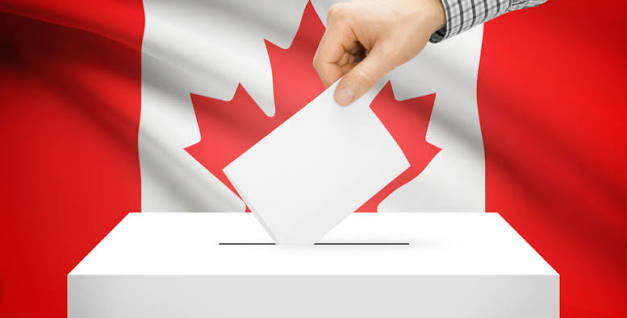
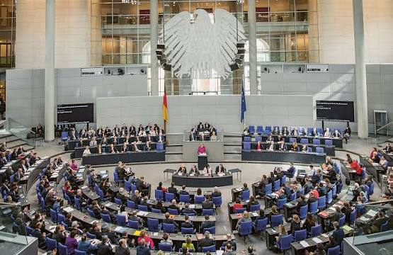
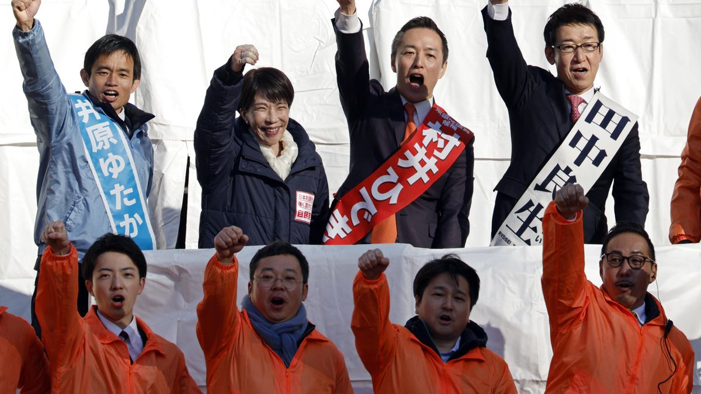
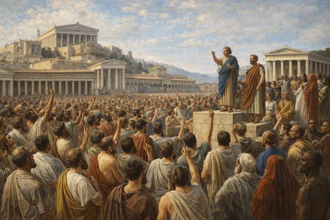
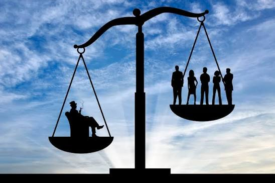

01
Participación ciudadana
Las personas pueden participar en la vida política mediante elecciones, organizaciones, consultas y otros mecanismos.
Una mirada a su origen, características, evolución y los desafíos que enfrenta en el mundo actual.
La democracia es un régimen político en el cual la soberanía reside en la ciudadanía y las personas participan, directa o indirectamente, en las decisiones políticas.
La palabra democracia proviene del griego demos, que significa pueblo, y kratos, que significa poder o gobierno.
En una democracia, los ciudadanos tienen la posibilidad de elegir a sus representantes mediante elecciones y ejercer diferentes derechos políticos y civiles.
“El poder político debe estar vinculado con la voluntad y participación de la ciudadanía.”

Una democracia necesita diferentes condiciones para funcionar correctamente.
Las personas pueden participar en la vida política mediante elecciones, organizaciones, consultas y otros mecanismos.
Los ciudadanos pueden elegir a sus representantes mediante elecciones periódicas y competitivas.
Las libertades de expresión, asociación, pensamiento y participación política deben ser respetadas.
Todas las personas e instituciones deben respetar las leyes y el marco constitucional.
El poder se distribuye entre diferentes instituciones para evitar su concentración.
Diferentes partidos, ideas y opiniones pueden participar en el debate político.

República democrática caracterizada por elecciones periódicas, instituciones públicas y participación ciudadana.

Cuenta con una democracia parlamentaria y una monarquía constitucional.

República federal con un sistema parlamentario y elecciones democráticas.

Monarquía constitucional con un sistema parlamentario democrático.

La historia de la democracia está relacionada con diferentes transformaciones políticas y sociales ocurridas a lo largo de los siglos.
Uno de sus antecedentes más conocidos se encuentra en la antigua Atenas, donde algunos ciudadanos participaban directamente en determinadas decisiones políticas.
Atenas desarrolló un sistema de participación política directa para determinados ciudadanos.
Surgieron ideas relacionadas con los derechos individuales, la soberanía popular y la división de poderes.
El derecho al voto se amplió progresivamente a sectores de la población que anteriormente estaban excluidos.
Actualmente existen diferentes modelos democráticos que enfrentan desafíos relacionados con la participación, información y representación política.
La democracia no está exenta de dificultades. A continuación se presentan tres problemáticas actuales, sus causas, consecuencias y posibles respuestas pacíficas.
La velocidad con la que circula información en redes sociales, combinada con la difusión de contenido falso o manipulado.
Puede provocar confusión, polarización social y decisiones políticas basadas en información incorrecta.
Promover la educación mediática, verificar las fuentes y fomentar el pensamiento crítico antes de compartir información.

02Las diferencias económicas y sociales pueden generar que determinados grupos tengan mayores posibilidades de influir en las decisiones políticas.
Algunos sectores pueden sentirse excluidos y perder confianza en las instituciones democráticas.
Promover políticas públicas que amplíen las oportunidades y fortalecer los mecanismos de participación ciudadana.
Las diferencias ideológicas pueden intensificarse cuando las posiciones políticas se convierten en confrontaciones entre grupos.
Puede dificultar el diálogo, aumentar la división social y reducir la posibilidad de alcanzar acuerdos.
Fomentar espacios de diálogo, escuchar opiniones diferentes y buscar puntos de encuentro.
Frente a los conflictos políticos y sociales, existen medios pacíficos para expresar ideas, sentimientos y propuestas. La poesía es una de esas herramientas.
Que nadie calle cuando pueda hablar,
que nadie imponga cuando pueda escuchar.
Que el miedo no gobierne nuestras decisiones
y que el diálogo construya soluciones.
Un pueblo que piensa puede transformar,
una voz que se escucha puede comenzar.
No con violencia, tampoco división,
sino con respeto, diálogo y participación.
Porque una democracia no vive de callar,
vive de las voces que se atreven a participar.
Y cuando las diferencias encuentran comprensión,
puede construirse un futuro desde la unión.
También implica participar, informarse, respetar las diferencias, defender los derechos y buscar soluciones mediante el diálogo y la convivencia pacífica.
Constitución Política de la República de Costa Rica.
Organización de las Naciones Unidas. Información sobre democracia y derechos humanos.
Instituto Interamericano de Derechos Humanos. Materiales educativos sobre democracia.